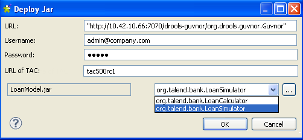

Avertissement
Ce composant est disponible dans la Palette de votre studio si vous avez souscrit à l'édition correspondante de Talend Big Data Studio.
|
Famille de composant |
Processing | |
|
Fonction |
Le composant tBRMS récupère des règles métier d’un Repository Drools Guvnor et les applique à un Job. | |
|
Objectif |
Le tBRMS applique des règles métier Drools à un flux entrant de données et écrit les données de sortie dans un fichier XML. | |
|
Basic settings |
Property type |
Peut être Built-in ou Repository. |
|
|
|
Built-in : Propriétés utilisées ponctuellement. |
|
|
|
Repository : Sélectionnez le fichier dans lequel sont stockées les propriétés du composant. Les champs suivants sont alors pré-remplis à l’aide des données collectées. |
|
|
Schema et Edit schema |
Un schéma est une description de lignes, il définit le nombre de champs qui sont traités et passés au composant suivant. Le schéma est soit local (Built-in), soit distant dans le Repository. Cliquez sur Edit Schema pour modifier le schéma. Notez que si vous effectuez des modifications, le schéma devient automatiquement built-in. |
|
|
|
Built-in : Le schéma est créé et conservé pour ce composant seulement. Voir également le Guide utilisateur de Talend Data Integration Studio. |
|
|
|
Repository : Le schéma existe déjà et est stocké dans le Repository. Ainsi, il peut être réutilisé dans divers projets et Jobs designs. Voir également le Guide utilisateur de Talend Data Integration Studio. |
|
|
XML Field |
Sélectionnez la colonne XML afin de passer les données à écrire au composant de sortie. |
|
|
Guvnor URL |
URL du Repository Guvnor. |
| Username et password |
Saisissez les informations d'authentification utilisées pour vous connecter à l'application Talend Administration Center contenant le module Drools Guvnor qui vous intéresse. | |
| Name of TAC application |
Saisissez le nom de l'application Talend Administration Center contenant le module Drools Guvnor qui vous intéresse. Par exemple lorsque l'URL de Talend Administration Center à utiliser est http://localhost:8080/tac500, saisissez tac500. | |
| Module List |
Soit : - Sélectionnez le fichier Jar contenant la règle métier à appliquer au flux de données. - Cliquez sur le bouton [...] et saisissez vos informations d'authentification à Drools Guvnor dans la boîte de dialogue. Cliquez ensuite sur Select Jar afin de parcourir le Repository et sélectionner le fichier Jar contenant la règle métier à appliquer. | |
|
|
Guvnor Package |
Entre guillemets doubles, saisissez la fin du chemin d’accès à l’URL for binary package, comme indiqué dans la vue Information and important URLs du site Web Drools Guvnor, lorsque vous sélectionnez un package particulier, par exemple : "/package/org.talend.bank/LATEST". |
|
|
Class Name |
Saisissez le nom de la classe dans laquelle la règle métier est stockée dans un fichier Jar. |
| Drools flow ID |
Un flux Drools décrit l'ordre dans lequel une série de règles métier sont exécutées. Lorsque vous appelez un flux Drools spécifique via le tBRMS afin d'utiliser l'ordre d'exécution qu'il définit, saisissez l'ID du flux correspondant dans ce champ. Pour plus d'informations concernant la création d'un flux Drools, consultez le Guide utilisateur de Talend Data Integration Studio. | |
|
Advanced Settings |
Configure XML Tree |
Cliquez sur le bouton [...] pour mapper le schéma source au schéma XML de sortie. |
|
|
Group by |
Utilisez la barre d’outils pour modifier l’ordre des colonnes. |
|
|
Advanced separator |
Cochez cette option pour modifier les séparateurs utilisés pour les nombres. |
|
|
Encoding |
Sélectionnez l’encodage à partir de la liste ou sélectionnez Custom et définissez-le manuellement. Ce champ est obligatoire pour la manipulation des données des bases de données.. |
|
|
tStatCatcher Statistics |
Cochez cette case pour collecter les données de log au niveau du composant. |
|
Utilisation |
Ce composant manipule des flux de données. Il nécessite donc un composant d’entrée et un composant de sortie. | |
Ce scénario décrit un Job à cinq composants dans lequel le tBRMS applique des règles métier Drools Guvnor à un flux d’entrée, afin que les données correspondantes puissent être récupérées en sortie. Dans ce cas, les règles sont appliquées aux données d’entrée concernant des personnes demandant un prêt. La sortie montrera si les personnes peuvent avoir accès au prêt ou pas.
Pour ce faire, procédez comme suit :
Déposez les composants suivants de la Palette dans l’espace de modélisation graphique : tFileInputExcel, tMap, tBRMS, tExtractXMLField, et tLogRow.

Reliez le tFileInputExcel au tMap à l’aide d’un lien Row > Main.
Relie le tMap au tBRMS à l’aide d’un lien Row > *New Output* (Main).
Reliez le tBRMS au tExtractXMLField à l’aide d’un lien Row > Main puis utilisez un autre lien Row > Main afin de connecter le tExtractXMLField au tLogRow.
Pour ce faire, procédez comme suit :
Double-cliquez sur le tFileInputExcel afin d’ouvrir sa vue Basic settings :

A côté du champ File name/Stream, cliquez sur le bouton [...] afin de parcourir votre répertoire et sélectionner le fichier Excel contenant les données d’entrée.
Dans la liste Sheet list, cliquez sur le bouton
 afin d’ajouter une nouvelle ligne Sheet dans le tableau.
afin d’ajouter une nouvelle ligne Sheet dans le tableau.Saisissez le nom de la feuille (Sheet) contenant les données d’entrée, entre guillemets doubles.
Dans le champ Header, saisissez le numéro de la ligne contenant le nom des colonnes.
Double-cliquez sur le tMap afin d’ouvrir le Map Editor:
En haut à droite du Map Editor, cliquez sur le bouton
afin d’ajouter un schéma de sortie.
Saisissez un nom pour le nouveau schéma dans le champ New output puis cliquez sur OK pour fermer la boîte de dialogue :

Mappez les colonnes et définissez les paramètres selon vos besoins, puis cliquez sur Ok pour fermer le Map Editor.
Note
Pour plus d’ informations concernant le mapping des schémas et la définition de leurs paramètres, consultez le Guide utilisateur de Talend Data Integration Studio.
Pour ce faire, procédez comme suit :
Cliquez sur le tBRMS afin d’ouvrir sa vue Basic settings.

Dans la liste Property Type, sélectionnez Built-In.
Cliquez sur le bouton [...] à côté du champ Edit schema pour ouvrir l’éditeur du schéma.
Le schéma d’entrée à gauche est automatiquement récupéré du tMap.

Dans la zone de sortie à droite, cliquez sur le bouton
pour ajouter une nouvelle colonne qui permettra
d’écrire les données de sortie dans un fichier XML et saisissez un nom pour
la colonne et définissez le Type comme
String.A côté du champ XML Field, sélectionnez le nom de la colonne XML ajoutée au schéma de sortie.
Saisissez l’URL de Guvnor dans le champ Guvnor URL.
Saisissez l'adresse de votre Talend Administration Center dans le champ TAC URL. Dans les champs Username, Password et TAC URL, saisissez respectivement votre identifiant et votre mot de passe de connexion à Talend Administration Center.
Lorsque Drools Guvnor est installé sur le même serveur Web que Talend Administration Center, vous pouvez utiliser le nom de votre application Talend Administration Center au lieu de l'URL complète.
A côté du champ Module List, cliquez sur le bouton [...] afin d’ouvrir la boîte de dialogue [Deploy Jar]. Dans cette boîte de dialogue, les champs URL, Username, Password et URL of TAC sont déjà renseignés, avec les informations saisies dans les étapes précédentes.

Cliquez sur le bouton [...] afin de parcourir les fichiers Jar dans la boîte de dialogue [Select Jar file] :

Développez les nœuds à parcourir et sélectionnez le fichier Jar contenant les règles adéquates, puis cliquez sur OK afin de fermer la boîte de dialogue.
Dans la liste à côté du fichier Jar sélectionné, choisissez le nom de la classe correspondant puis cliquez sur OK pour fermer la boîte de dialogue.
Un programme Talend transforme la bibliothèque des règles métier de façon à pouvoir l’utiliser dans un Job et crée un fichier XSD à la racine de votre studio, dans /studio_path/Drools/<project_name>.
Dans le champ Drools Flow ID (optional), saisissez, entre guillemets, l'ID du flux Drools à utiliser lors de l'exécution des règles. Dans cet exemple, saisissez loanflow. Pour plus d'informations concernant les IDs des flux Drools, consultez le Guide utilisateur de Talend Data Integration Studio.
Cliquez sur l’onglet Advanced Settings afin de définir des paramètres supplémentaires.

Dans la zone XML mapping, cliquez sur le bouton [...] pour configurer l’arborescence XML.

Cliquez-droit sur la première ligne de la zone Link target puis sélectionnez Import XML Tree.
Parcourez votre répertoire et sélectionnez le fichier XSD à la racine de votre Studio. Le schéma XML Tree est rempli automatiquement :

Déposez toutes les colonnes adéquates à partir de Schema list dans les champs des colonnes correspondantes dans le schéma Link target.

Dans la boîte de dialogue qui apparaît, sélectionnez l’option Create as attribute of target node.

Cliquez-droit sur le champ reason et sélectionnez Set As Loop Element dans la liste.
Cliquez sur OK pour fermer la boîte de dialogue.
Pour extraire les données qui vous intéressent, vous devez configurer le flux de sortie. Les opérations à effectuer sont les suivantes :
Double-cliquez sur le tExtractXMLField afin d’ouvrir sa vue Basic settings.
Cliquez sur Edit schema pour ouvrir l’éditeur du schéma.

Dans le schéma de sortie, à droite de l’éditeur, ajoutez et configurez les colonnes exactement comme elles apparaissent dans le schéma d’entrée du tBRMS.
Cliquez sur OK pour fermer l’éditeur.
Dans le champ Loop XPath query, saisissez le nom du tag racine XML Tree, tel qu’il apparaît dans l’éditeur Configure XML Tree du composant tBRMS, c’est-à-dire précédé d’un slash et entouré de guillemets doubles, par exemple : “/loanSimulator”.
Dans les champs XPath query, à côté des colonnes correspondantes, saisissez entre guillemets doubles le nom des champs tels qu’ils apparaissent dans les champs XML Tree, dans la zone Link Target de l’éditeur Configure XML tree du composant tBRMS.
Double-cliquez sur le tLogRow afin d’ouvrir sa vue Basic settings :

Dans la zone Mode, sélectionnez l’option Table (print values in cells of a table).
Sauvegardez le Job et appuyez sur F6 pour l’exécuter.
Les résultats sont écrits dans une table de sortie dans la vue Run.

La règle métier a été appliquée aux données d’entrée et le tableau des résultats indique quelles personnes ont été rejetées. La colonne name indique la raison pour laquelle la personne ne pourra obtenir de prêt.